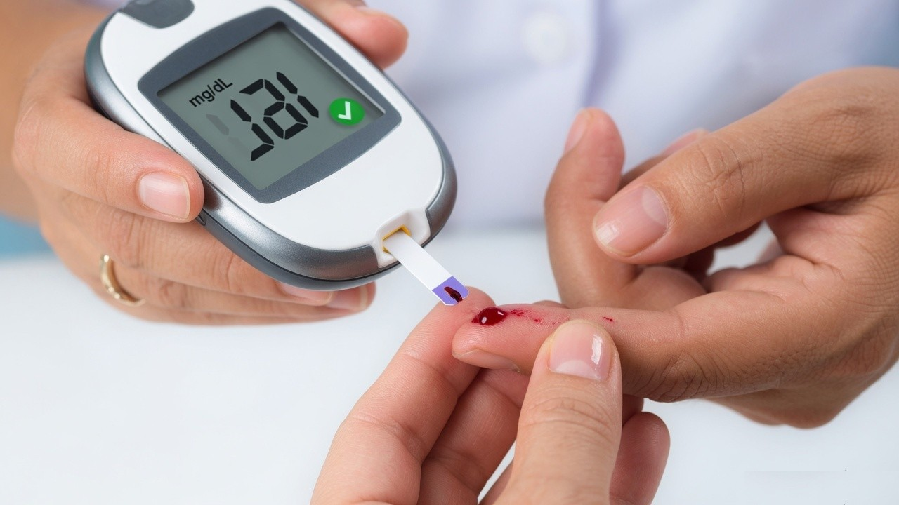

Diabetes care is a pattern of sugar checks, HbA1c, kidney tests and daily habits, not a single fasting number.
Fasting sugar is a snapshot before breakfast. Post-meal sugar shows how the body handles food. HbA1c summarises roughly three months. Doctors use all three because any one of them can miss part of the picture.
Kidneys, eyes, feet and cholesterol are part of the same illness. Kidney tests, urine and lipids belong with the sugar tests so those risks are not left for a later year. Medicine names and doses belong on the booking form so the report is read in context.
Home readings help between lab visits. Note the time, whether it was before or after food, and anything unusual that day. Bring that log to the consultation instead of relying on memory.
This article is general information. It is not a personal dose change or a diagnosis. Confirm targets with the doctor who knows your other conditions.
General health information for readers in and around Egra. It is not a diagnosis or a personal treatment plan.